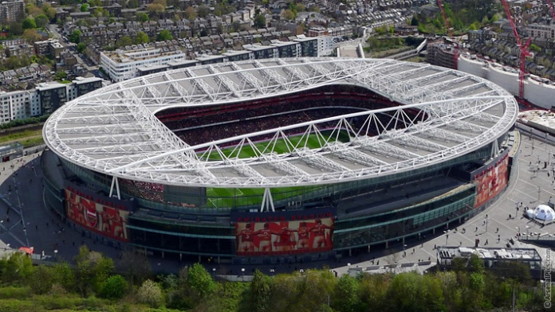
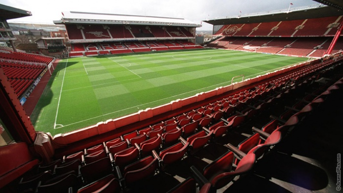

<< Back to previous page
Stadium
Return to the past
In the past, the club's stadium has smaller size than the current stadium - Emirates. The old stadium's name is Highbury. Highbury can contain about 40,000 spectators, this number can be suitable with small clubs, but for Arsenal's fan, it is not enought.
Althought Highbury has limited volume, it had gone with the club to obtain many honours in the past. Typically, the club championed Premier League with 49 unbeaten matches which is still a record of Premier League until present. Seemly, the size that is not too big is an advantage help atmostphere in Highbry always be passionate and vibrant by fans cheering with all of their energy for the club. Because the number of fans buying ticket so much compare to the number of seat in stadium, the board of team decided to build a new stadium having ability for containing about 60,000 spectators. As a result, Emirate stadium is the club's stadium today.
Back to the present
Emirates stadium had built since 2004, after two years contributed and completed, Emirates was used firstly in 2006 when the club played with Astovila in season 2006-2007. Emirates stadium has about 60,000 seats for spectators, a large parking place and beautiful views. It is very convenient to come by car, by bus or by train. However, the ticket price allowing to put the foot into this stadium is not cheap, a spectator can have to pay 60 pounds for a ticket.

The price is not cheap, but all of fans would not be disappointed as the club always plays with all the best. Scoring the nice goals and winning is the direction of the club and will be never change!